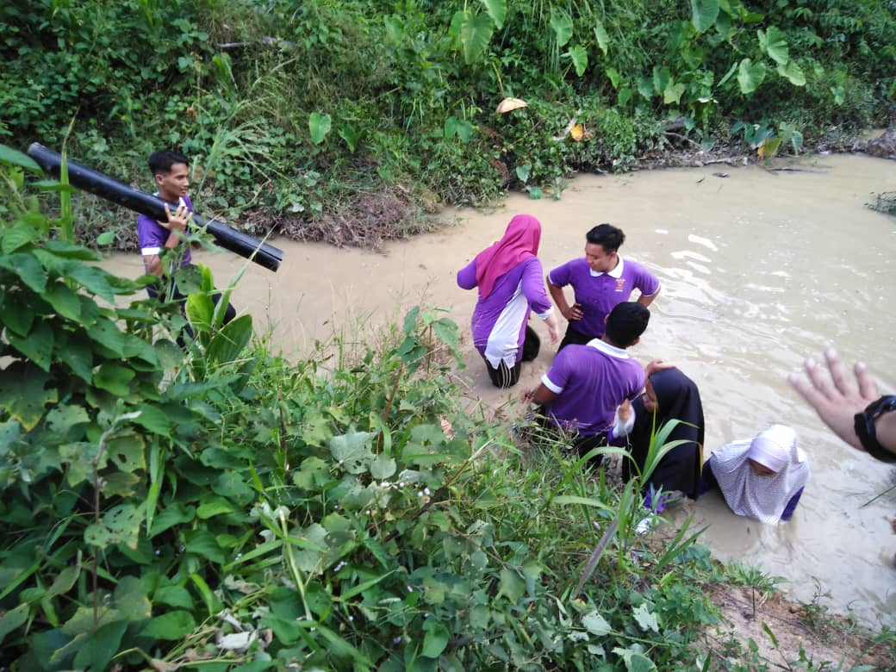
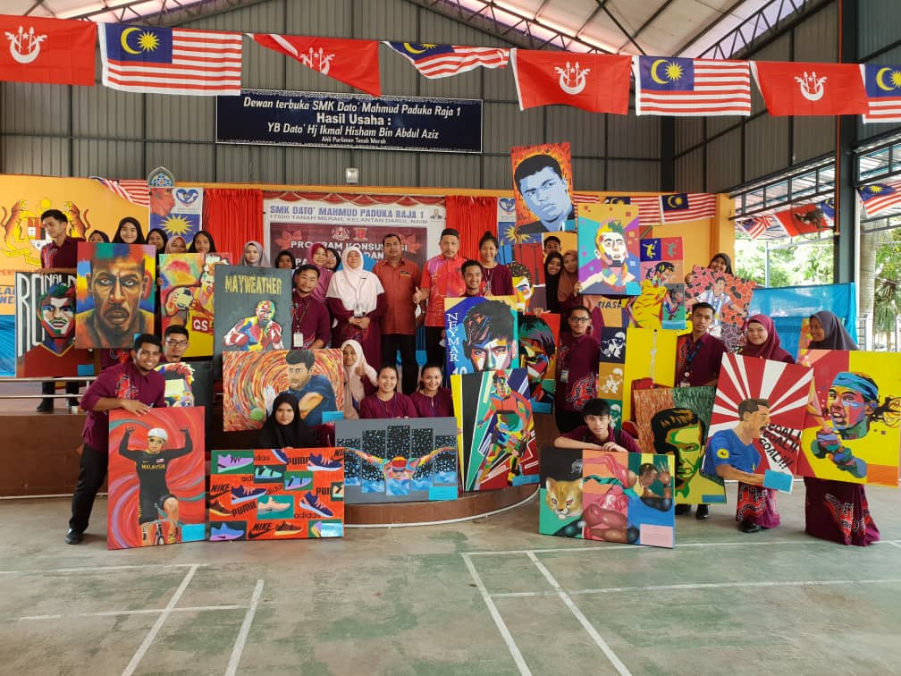
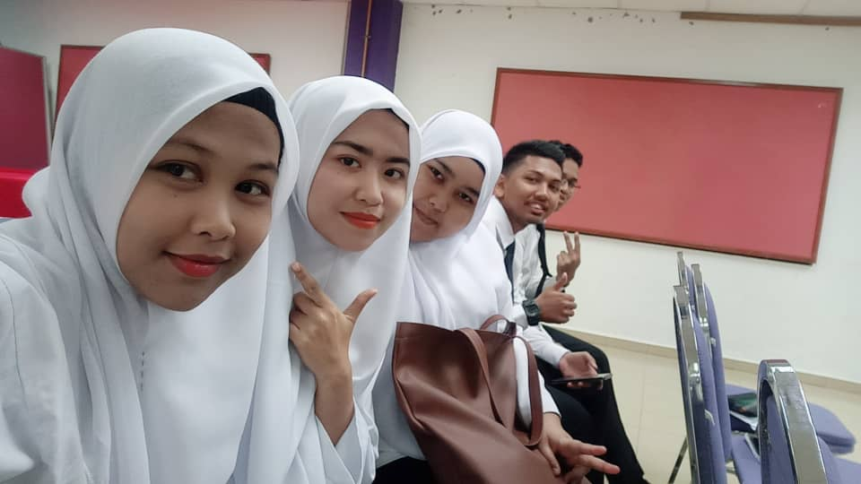

MY EXPERIENCE

This is picture when I was form 6, I have to do visiting field studies for my assignment. I can tell it was a good experience that I have. From this situations I can learn about how to become a good member for my group. I also learn become tolerate, cooperate and not selfish.


This is picture when I visit Cameron Highland. It was cool there. When I visit there so many flowers such as Lavendar Garden. I also buy ice cream lavender. It was in purple colour. It also taste like lavendar. It also my sweet experience because it was my first time visit Cameron Highland.
After that this is my experience that I and family go to climbing. Bukit Panau are near with my home. I can story that it very tired to climbing but it so beautiful at the top hill. We can see all place that near with that location.
This is picture when I was form 6. There was picture when I had camping at Batalion ke 5 Renjer Diraja.It was my sweet memories and sad memories when I was there. I had camping there for 3 days 2 night.
This is the sad memories when I was camping. It so hard for me this activity. This activity that we must enter the water and walk until the challenge are solve. The water is very deep and mud. It was very hard to walk and make us more sinking. It was the worst memorable that I had when I'm camping here.
When I was form 6 I'm enter to art class. However I'm not from art class when I was form 5. I still try until I can perform in art class. When I was form 5 actually I was from science class. I learn about biology, chemistry, physics and else. But I cannot get awesome result in SPM. That's why i enter to form 6 and take art class. It make me more open minded when I was form 6. Art also can make someone successful not just science courses.
This is picture when MDS at Uitm Machang. I got to know with my new friends when MDS.